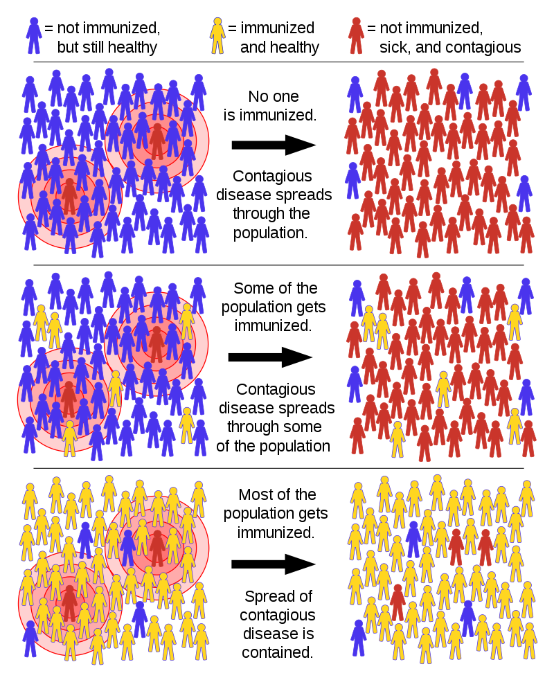

Covid Symptoms and Preventions
Social distancing
How covid virus is different from others
Need or Urgency for vaccine
Progress of Vaccine devolopment
Herd immunity (also called herd effect, community immunity, population immunity, or social immunity) is a form of indirect protection from infectious disease that occurs when a sufficient percentage of a population has become immune to an infection, whether through vaccination or previous infections, thereby reducing the likelihood of infection for individuals who lack immunity. Immune individuals are unlikely to contribute to disease transmission, disrupting chains of infection, which stops or slows the spread of disease. The greater the proportion of immune individuals in a community, the smaller the probability that non-immune individuals will come into contact with an infectious individual.
Individuals can become immune by recovering from an earlier infection or through vaccination.Some individuals cannot become immune because of medical conditions, such as an immunodeficiency or immunosuppression, and for this group herd immunity is a crucial method of protection. Once the herd immunity threshold has been reached, disease gradually disappears from a population. This elimination, if achieved worldwide, may result in the permanent reduction in the number of infections to zero, called eradication. Herd immunity created via vaccination contributed to the eventual eradication of smallpox in 1977 and has contributed to the reduction of other diseases Herd immunity applies only to contagious disease, meaning that it is transmitted from one individual to another. Tetanus, for example, is infectious but not contagious, so herd immunity does not apply.
Herd immunity was recognized as a naturally occurring phenomenon in the 1930s when it was observed that after a significant number of children had become immune to measles, the number of new infections temporarily decreased, including among the unvaccinated.[8] Mass vaccination to induce herd immunity has since become common and proved successful in preventing the spread of many infectious diseases. Opposition to vaccination has posed a challenge to herd immunity, allowing preventable diseases to persist in or return to populations with inadequate vaccination rates
| Disease | Transmission | R0 | HIT |
|---|---|---|---|
| Measles | Airborne | 12–18 | 92–95% |
| Pertussis | Airborne droplet | 12–17 | 92–94% |
| Diphtheria | Saliva | 6–7 | 83–86% |
| Rubella | Airborne droplet | ||
| Smallpox | 5–7 | 80–86% | |
| Polio | Fecal-oral route | ||
| Mumps | Airborne droplet | 4–7 | 75–86% |
(COVID-19 pandemic) |
2.5–4 | 60–75% | |
| 2002–2004 SARS outbreak | 2–5 | 50–80% | |
| Ebola | Bodily fluids | 1.5–2.5 | 33–60% |
| Influenza | Airborne droplet | 1.5–1.8 | 33–44% |